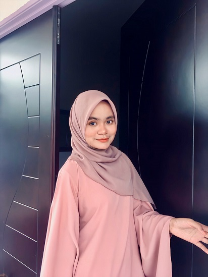

|  | ||
| Name | Nur A'ina Munirah binti Ahmad Nasri | |
|---|---|---|
| Age | 20 Years old | |
| Gender | Girl | |
| Race | Malay | |
| Nationality | Malaysia | |
| State | Kedah | |
| City | Pendang | |
| Hobby | Listening a song | |
It's My Biodata!!
I was born at Hospital Alor Star Kedah but I was raised in other states such as in Selangor, Terengganu and Pahang. From a young age I lived as a nomad. It was an interesting because i can get a lot of friends. Other than that, I can also taste a variety of traditional foods from each state.
Talked about my hobby, I'm always listening my fav song such as song from Keshi, Skinnyfabs, Hujan, Bunkface, Secondhand Serenade and Khalid. My fav genre is always come from pop rock, indie and jazz. Not only that, I'm also loved watching a movie especialy thriler and horror. If I got time I will going out to cinema with my friends. But now since it Pandemic Covid19 I'm only watched movie at home and it quite interesting.
Top 5 Song Of my fav band Hujan
- Kotak Hati
- Aku Scandal
- Mencari Konklusi
- Aku kau dan Pelangi
- Pagi Yang Gelap
Top 5 my fav Movie
- A Star is Born
- Bloodshort
- Extraction
- Jumanji:The next Level
- Ejen Ali The Movie
Fav Youtuber
For additional, this is my fav youtuber and I always watched this youtube channel.
Aisyah Habshee YouTube ChannelSome of My Favourite Song
Tentang Kita CoupleKotak Hati Hujan
Blue Jeans Gangga
Skinnyfabs Happy